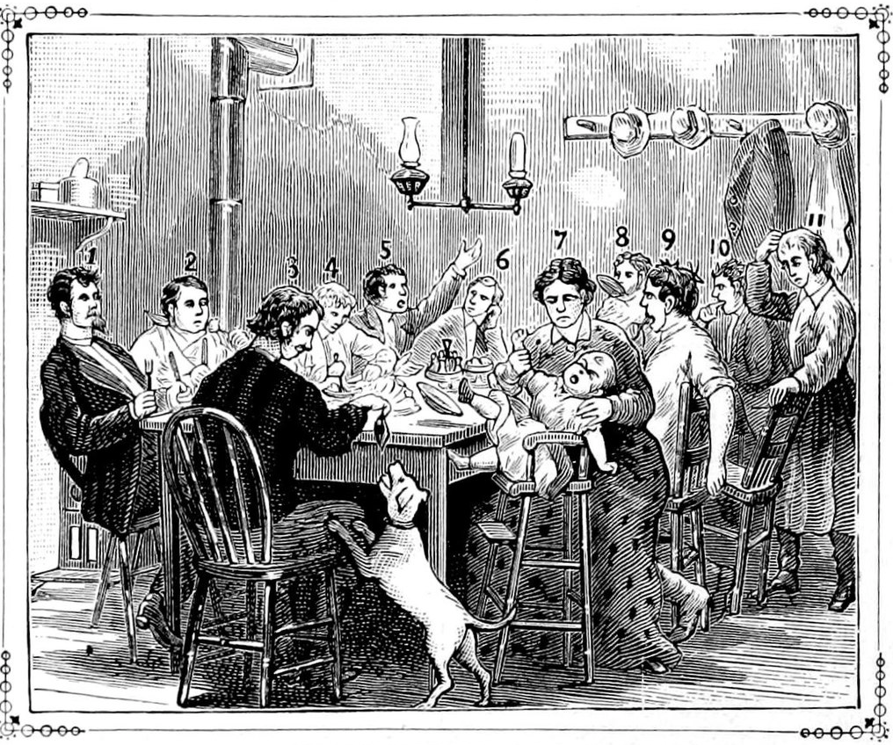

Everyday Systems: Podcast : Episode 71
Everyday Systems Podcast — Episode 71: Last Wordism
In this episode: A two-word anti-mantra to snap you and your family out of automatic bickering.

Hi, this is Reinhard from Everyday Systems.
I wish you all Shalom Bayit, or the best approximation, on Thanksgiving and always, however you can attain it. Thanks for listening.
© 2002-2022 Everyday Systems LLC, All Rights Reserved.